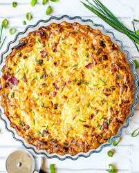

Crustless Quiche

Description
This is a very simple one-pot crustless quiche. I learned how to make it at "manual" while I was at primary school. It has since become a family favourite.
Ingredients
- Eggs
- Butter
- Bacon
- Flour
- Baking powder
- Salt
- Milk
- Onions
- Mushrooms
Steps
- Cook bacon in microwave for 2 minutes.
- Chop and soften onion in a pan
- Mix dry ingredients in a bowl
- Melt butter in microwave
- Combine milk, eggs and melted butter
- Add wet ingredients to dry ingredients and mix well
- Add bacon and onion to the mixture
- Grease a glass dish with butter and pour in quiche mixture
- Cook quiche for approximately half an hour in oven.